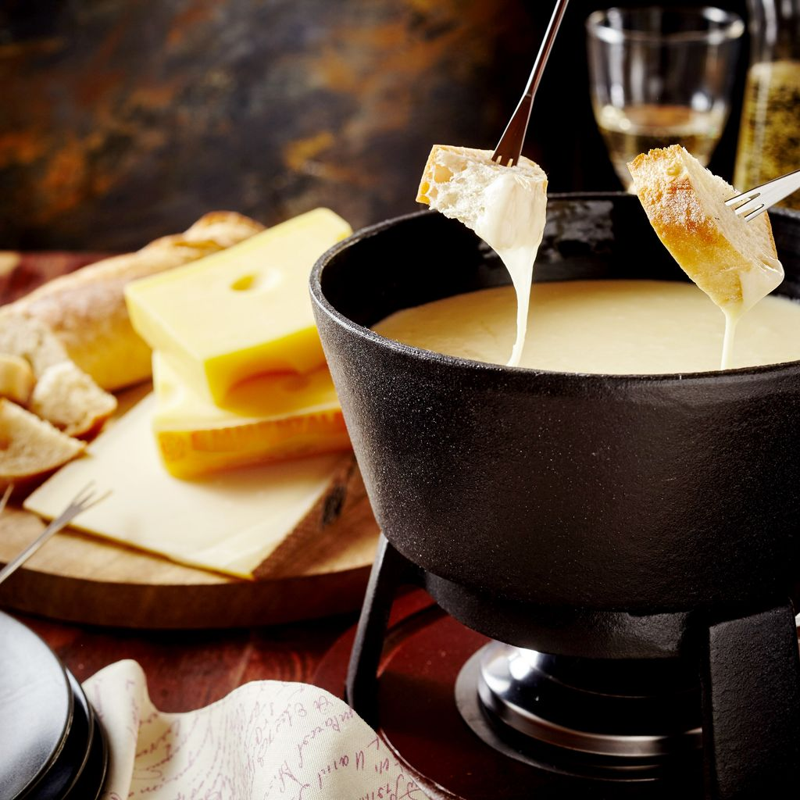

Fondue

Une fondue est une spécialité culinaire consistant à plonger des aliments dans un récipient de liquide chaud
Ingredients
- fromage
- pain
- vin blanc
- charcuterie
Steps
- Couper le pain en cubes.
- Râper ou couper le fromage en petits morceaux.
- Frotter l'intérieur du caquelon avec de l'ail (facultatif).
- Verser un peu de vin blanc sec dans le caquelon (facultatif).
- Mettre le fromage dans le caquelon.
- Faire fondre le fromage à feu doux, en remuant régulièrement.
- Assaisonner avec du poivre et de la muscade selon les goûts.
- Placer le caquelon sur le réchaud au centre de la table.
- Piquer un morceau de pain avec une fourchette à fondue et le tremper dans le fromage fondu.
- Servir avec des cornichons, de la charcuterie et d'autres accompagnements selon les préférences.